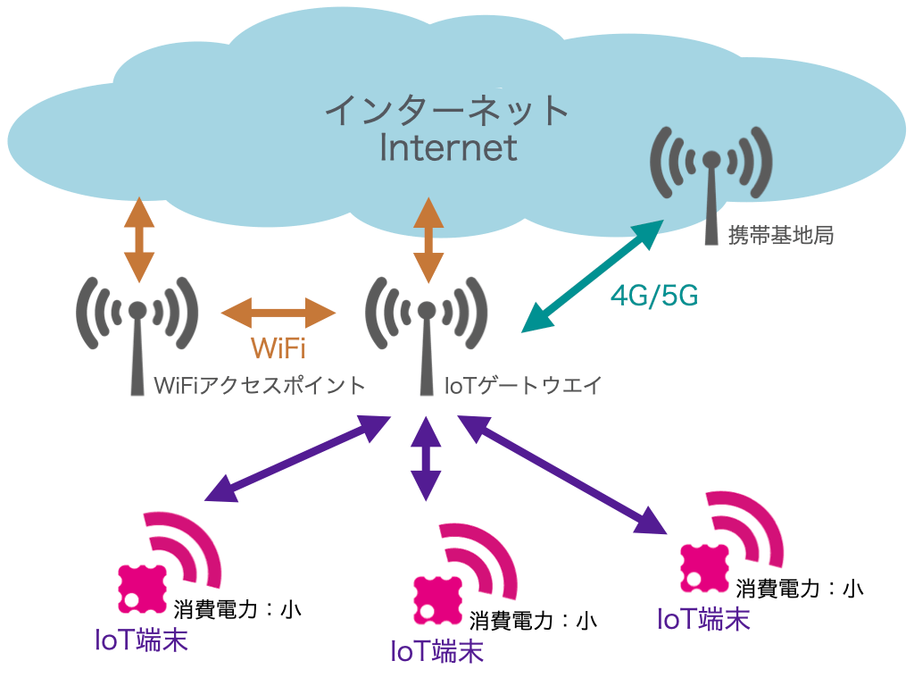

IoTについて考える
IoTとは
IoTとは、Internet of Thingsの略で、モノをインターネットにつなぐことです。 
IoTという言葉ができる以前、インターネットはコンピュータどうしを接続するためのものでした。よって、従来は主にパソコンやサーバー等のIT関連機器が接続されていました。
このように、
情報の収集、分析、可視化、遠隔制御
などがIoTが可能にしたことの代表例として挙げられる。
IoTで何ができそうか？
↓↓↓↓実際に班で話し合って出した案↓↓↓↓
IoTを使った製品のアイディア
スマホから遠隔でコンロのロックがかけられたら便利だなと考えました。この商品の良い点としては不具合やハッキング被害に遭ってもスマートロックなど
と違ってそれだけでは大事に至らない点だと考えます